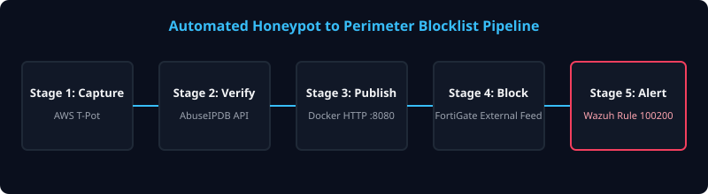

Project 1: pitaworld AD Lab & Wazuh SIEM
Enterprise HomelabA segmented 192.168.3.0/24 enterprise environment simulating Active Directory, rigorous firewall filtering, and automated host isolation.
flowchart TD
Internet["Internet (VirtualBox NAT)"] --> pfSense["pitasense (.2)
pfSense + Suricata + pfBlockerNG"] pitakli["pitakli
Kali Attack Box"] -.->|Adversary Emulation| pfSense pfSense --> DC["PtaSDC (.10)
Samba AD DC (Ubuntu)"] pfSense --> WIN["Windows Client
Domain Member + Agent"] pfSense --> UB["Ubuntu Client
Domain Member + Agent"] pfSense --> WAZ["pitawazuh (.11)
Wazuh Manager"] DC -.->|Event Logs| WAZ WIN -.->|Sysmon & Agent| WAZ UB -.->|Auditd & Agent| WAZ pfSense -.->|Syslog 514/tcp| WAZ classDef srv fill:#1e293b,stroke:#38bdf8,stroke-width:2px,color:#fff; classDef sec fill:#0f172a,stroke:#f43f5e,stroke-width:2px,color:#fff; class DC,WIN,UB,WAZ srv; class pfSense,pitakli sec;
pfSense + Suricata + pfBlockerNG"] pitakli["pitakli
Kali Attack Box"] -.->|Adversary Emulation| pfSense pfSense --> DC["PtaSDC (.10)
Samba AD DC (Ubuntu)"] pfSense --> WIN["Windows Client
Domain Member + Agent"] pfSense --> UB["Ubuntu Client
Domain Member + Agent"] pfSense --> WAZ["pitawazuh (.11)
Wazuh Manager"] DC -.->|Event Logs| WAZ WIN -.->|Sysmon & Agent| WAZ UB -.->|Auditd & Agent| WAZ pfSense -.->|Syslog 514/tcp| WAZ classDef srv fill:#1e293b,stroke:#38bdf8,stroke-width:2px,color:#fff; classDef sec fill:#0f172a,stroke:#f43f5e,stroke-width:2px,color:#fff; class DC,WIN,UB,WAZ srv; class pfSense,pitakli sec;
Firewall Policy & Defense Highlights
- Segmentation: pfBlockerNG threat lists evaluated first, followed by explicit ports for Kerberos (88), LDAP/S (389/636), and SMB (445).
- Active Response: Automated containment executing
firewall-dropandhost-denyfor 60 seconds on custom Wazuh rule triggers. - Integrity & Posture: FIM monitoring critical system directories (
/etc,/bin,/boot) with continuous SCA benchmarks.
Project 2: Honeypot to Firewall Threat-Feed Pipeline
Threat IntelligenceAutomated intelligence loop translating raw AWS honeypot probes into dynamic, actionable firewall blocking at the perimeter.

Pipeline Workflow
- Capture: T-Pot honeypot on AWS logs incoming attack probes.
- Verify: Python script queries AbuseIPDB API; keeps malicious IPs with >90% confidence.
- Publish: Docker container serves
malicious_ips.txtover HTTP (port 8080). - Block: FortiGate external threat feed consumes the list to enforce a WAN-to-LAN DENY policy.
- Alert: Wazuh rule 100200 fires alerts on inbound connection attempts matching the feed.